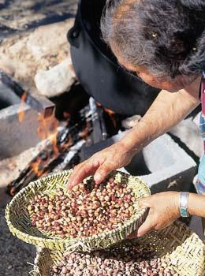

Uncommon Corn
By Barbara Pleasant
April/May 2004
Grow these colorful whole-grain corns for improved nutrition and great taste.
We may live in the "corncrib of the world," with annual U.S. production of more than 500 billion pounds of corn-grown mostly for livestock-but we have lost our appreciation for corn as a whole grain to cook and eat ourselves. Today, we think of corn mostly as a sweet vegetable, but-not to take away from sweet corn many varieties of unsweet grain corn deserve much wider use in our gardens and kitchens than they receive.
Corn was developed about 6,000 years ago in the Oaxaca Valley of Mexico. Eventually, many American Indian tribes came to depend upon this easy-to-grow, protein-rich grain. Modern, commercial grain corn products commonly are degermed to lengthen their shelf life, but degerming takes flavor and nutrition out of the corn. So, if you want to enjoy the most flavorful and nutritious corn possible, you have to do what the Oaxacans did-grow and grind your own.
"The flavors of Indian corn range from a perfumey, aromatic taste to a deep corn flavor," says Walter Goldstein, research director at the Michael Fields Agricultural Institute in East Troy, Wis. Carol Deppe, a graincorn hybridizer in Corvallis, Ore., and author of Breed YourOwn Vegetable Varieties adds, "Good corn products are not found in unrefrigerated boxes at the supermarket."
Processed cornmeal, grits, polenta and other corn products have had their skins and germs removed, both of which carry much of the flavor. The germ is removed because it's high in natural fats, which turn rancid quickly after the corn is ground if it's not refrigerated. Removing the germ from the corn dramatically reduces several vitamins and minerals (see "Whole Grain is Way Healthier!", this page).
And there's another problem: Mass-market corn products, including most organic ones, are made from high-yield hybrids rather than from high-flavor corns. "Agribusiness corn doesn't taste good, even when ground into whole-grain products and handled properly," Deppe says. "The optimal corns for people-food come from heirloom or specialty varieties."
Some small companies are producing exceptional freshly ground, whole-grain heirloom corn products for people-food. Mother Earth News editors tried cornmeal and grits from Anson Mills in Charleston, S.C. ( www.ansonmills.com ) and found the flavor and texture to be exceptional.
BETTER CORN COMING
The main reason companies grow hybrid corn rather than open-pollinated (OP) corn is productivity. Some hybrids are more productive, disease tolerant and resistant to falling over (called "lodging") than OP varieties. But on the downside, they don't taste very good, they are bred to be grown with heavy fertilizer applications and many now contain genetically modified (GM) genes.
OP corn varieties selected for flavor taste better, cost less, need less fertilizer and are less likely to have been bred to carry GM transgenes. And by saving the seeds from your own crops you can develop a variety well adapted to your climate, site and soil. Some agricultural researchers point out that the money saved on seed and fertilizer with OP varieties can offset the productivity edge offered by hybrids.
There also may be important nutritional differences between modern hybrids and many varieties of OP corn. For example, according to research geneticist Linda Pollak of the USDA Agricultural Research Service at Iowa State University, protein is often higher in OP corn, though the amino acid balance in all corn needs some fine-tuning to make the proteins more usable. Pollak is pursuing this goal with ongoing plant breeding; she also is working to develop OP corns with more stable and healthful fats. "We think we can improve the ratios of fatty acids so the corn does not go rancid so quickly, and we can also improve the healthfulness of the fat so it is comparable to olive oil."
Pollak says she also sees a promising future for farmers who want to grow their own high-protein corn for livestock feed: "By having corn with a better amino acid balance, farmers wouldn't have to supplement corn with more costly soybean feeds." Within two years, Pollak says, she hopes to release OP corn varieties that set new health and nutrition standards.
Then there is the spiritual side of hand-tending a plot of corn. Carl L. Barnes, an American Indian corn expert who lives in Turpin, Okla., says, "There are three types of poverty: physical, mental and spiritual. When you turn to the soil and raise corn, all of these poverties disappear."
WHOLE CORN COOKERY
If you start with a good-tasting variety, handle it properly and cook it with care, whole-grain corn can be the basis for some of the most satisfying food on earth. Glenn Roberts, founder and owner of Anson Mills, speaks of heirloom corn the way vintners speak of wine, describing blue corn grits as having "flavor nuances that start out mineral and then blossom into citrus peel" as they slowly cook at temperatures of less than 180 degrees. Anson Mills, which was named "Agricultural Business of the Year" for 2002 by the Carolina Farm Stewardship Association, sells cornmeal, polenta and grits to top chefs and, by mail order, to other consumers, and works to preserve 20 types of heirloom corn.
To get the full flavor from any type of culinary grain corn, Roberts says, it's essential for the corn to ripen and dry on the stalks. Slow drying, low-temperature milling and immediate refrigeration of freshly ground corn keep the flavors alive.
Because whole-grain cornmeal retains its natural oils, you often don't need to add butter or other fats when baking with it. "I never add fat to corn bread, since the (corn) meal already has fat in it," says Zoe Caywood, owner of War Eagle Mill in Rogers, Ark. The mill grinds and sells organic corn and other grains, and Caywood's War Eagle Wholegrain Cookbook III (available at www.wareaglemill.com ) includes dozens of recipes using whole-ground corn. "To retain flavor and nutrients, it's important that the grain never becomes heated in the grinding process," Caywood says.
You don't have to be hungry to be tempted by hot, whole-grain corn bread, but what about mush? Would you like it better if we called it polenta? Either way, mush or polenta is made by cooking 1 part cornmeal in 3 parts lightly salted water until the mixture thickens. Then, it is poured into a pan to cool into a smooth cake that can be cut into pieces. So-called "instant" polenta is dehulled, degerminated, cooked, dried, very finely ground and devoid of a rich corn flavor. In contrast, fresh, coarsely ground mush is renowned among knowledgeable corn cooks for the fantastic flavor it retains. A similar comfort food from corn is spoon bread, which is wann mush mixed with eggs and milk, and baked into a fluffy casserole.
You can make grits from coarsely ground whole corn, too. In Wilsonville, Ala., Frank McEwen uses a small burr mill to grind blue, yellow and white corn into grits, which he sells out of a refrigerator case in his farm supply store. "My blue corn has a richer, cornier taste than white corn," he says, "but putting cheese into blue grits will turn them pink." Cooking times for whole-grain corn grits range from 20 minutes to more than an hour, depending on the corn variety and coarseness of the grind. If you're pressed for time, try making a big batch and refrigerating the leftovers; Roberts of Anson Mills says chefs do this all the time.
Parched corn offers yet another scrumptious way to eat unsweet grain corn. Corn-breeder Deppe and Alan Kapuler, president of Peace Seeds in Corvallis, Ore., developed two OP varieties that make superior parched corn 'Magenta Parch' and 'Supai Red Parch' (see "Getting to Know Culinary Corn," Page 64, for descriptions and seed sources for each corn variety in this article). Both can be ground into wonderful-tasting cornmeal, too.
"Parched corn starts out as a dry, crunchy morsel with a soft middle, with flavor that becomes sweeter as you chew," Deppe says. "The flavors are like nothing you've experienced."
Best of all, it is cooked in a dry pan without oil or other fat, or in a microwave oven. In about five minutes at medium-low heat, the toasting kernels start to swell and split, releasing a wonderful aroma. The best parching corns are slow to burn, though it's important to keep them moving by stirring or shaking the pan. You also need to hold a lid or screen over the pan to keep the kernels from popping out.
You can keep uncooked parching corn kernels indefinitely in an airtight container, or cook up batches and have them ready to munch in zip-top bags. Deppe says she likes to add nuts to her parched corn snacks, too, noting the oil and moisture of the nuts combine delightfully with the flavors and dryness of the corn.
GROWING FOOD CORN
In the centuries before Columbus arrived in the Americas, indigenous peoples from Alberta to Peru saved their most flavorful corns for seed. Many of these strains are extinct, but some of the flavors remain intact in Indian corn strains still grown in Mexico and the southwestern United States. These corns evolved in dry soil conditions, so they often grow poorly in cold or wet climates where microorganisms in the soil might cause root rot. Unlike hybrid corn, most old OP varieties stop growing new roots as they mature, so root rot is a serious threat.
The solution is to pick varieties adapted to your climate, which is what you will find among the offerings of regional seed companies such as Southern Exposure Seed Exchange (in the South), Baker Creek Heirloom Seeds (Midwest), Territorial Seed Company (Northwest), Turtle Tree Seeds (Northeast) and Seeds of Change (Southwest).
There are three main types of grain corn to choose from: flour, flint and dent, differentiated by kernel characteristics. The following descriptions will help you make sense of variety information in seed catalogs.
Flour corns have starchy endosperms (the central, fleshy part of each kernel), so they are the best type of corn for grinding into fine cornmeal, often called corn flour. Most can be eaten fresh - roasted or boiled on the cob, but only for a day or two because sugars quickly convert to starch as the kernels mature. Some flour corns are good for parching, too. Regional adaptations vary with variety; Southwestern ancestral strains are the most common.
Flint corns, sometimes called hard corns, have a lot of "flinty" endosperm and only a little "flour" endosperm. Flints are the most flavorful corn for grinding into grits or polenta.
Dent corns have a central flour endosperm surrounded by a flinty endosperm that shrink at different rates as kernels dry, causing a dent to form in the top of each kernel. Almost all hybrid field corns are dents, as are the most productive OP varieties. Dents make good animal feed and also can be ground into flour, grits and masa, and added to other foods such as soups.
Carl Barnes says if you're just beginning to experiment with grain corn, start with a small plot of a single variety. Also, keep in mind that grain-corn pollen can cause sweet corn to go starchy, so it's important to separate the two by at least 100 feet. And, because grain corn is wind-pollinated, it should be planted in blocks rather than single rows to get well-filled ears.
Barnes boosts the fertility of his soil with compost or worm castings. You can plant corn after a nitrogen-fixing cover crop such as alfalfa, or spread a mulch of nitrogen-rich grass clippings. Goldstein adds a word of caution: Be sure to wait until the soil is warm before planting untreated corn. A cold, wet seedbed can decrease seedling survival and encourage root rot.
The ideal spacing between plants varies with variety. A Northern flint, which grows less than 8 feet tall, should do well with plants grown 8 inches apart; varieties more than 8 feet tall need 18 to 24 inches between plants. With the tall corns, lodging is a big concern but open spacing still is needed to provide enough light so the plants grow stiff and strong.
As the corn grows, use a rototiller or hoe to control weeds while hilling up soil around the base of the plants. Never remove the side branches, called tillers. Some varieties actually produce ears on the tillers, and tillers are often an important pollen source.
Hybrid corn usually sheds pollen all at once, but OP varieties that form tillers have a longer pollination period involving both the primary tassel and tassels growing from tiller tips.
If strong winds knock your corn over when the ears are ripening, don't worry. "Give it a few days and it will stand back up," Barnes says. If three days pass and the corn is still lying low, he suggests tamping soil around the base of the plant with the heel of your shoe to provide extra support.
Dry weather is a big plus when the ears are drying, but if wet weather strikes and the ears are not quite dry, go ahead and harvest and shuck them (remove the husks). Then dry them indoors, using a fan to help complete the drying process. In naturally dry climates, you can store your corn on the cob in a cool, pest-proof place where temperatures are less than 55 degrees. In humid locales, it's best to store the dried ears or shelled corn in airtight bins, cans or pails. Never store damp corn because the molds that form are toxic to people and animals. No matter where you live, check stored corn often, because stowaway meal moths and weevils can do a lot of damage if not detected early. If you do find these pests, put your corn in a freezer for three or four days to kill them.
Growing your own corn gives you better-tasting and more nutritious cornmeal, and it's an excellent, high-yielding crop for anyone who wants to be more self-sufficient. A small patch can be easily harvested by hand and stored for year-round use. You can also feed this protein-rich grain, along with the corn stalks, to your animals. Sheep will eat the leaves; cows and goats will eat the leaves and stalks.
Mother Earth News contributing editor Barbara Pleasant is a veteran gardening journalist who lives in North Carolina, near the Pisgah National Forest. During her research for this story, she discovered several exciting studies under way in New York, Wisconsin and Iowa; researchers there are evaluating OP corn varieties, corn flavors, and protein and healthy fat content of corns. Pleasant continues to follow these projects for Mother Earth News and will report on the findings when they are available.
Mother Earth News
 David Cavagnaro You can easily make your own parched (dry-roasted) grain corn at home for a sweet, crunchy snack with "flavors like nothing you've ever tasted before." |
David Cavagnaro Grain corn grows in a range of sizes and colors. Some types reach only 2 feet tall; others rise to 20. Ears can measure as small as the length of a thumbnail to 2 feet long, and the number of kernels per cob can range from 16 to 500. Colors run from white or yellow, to red, purple, blue, brown and near black - sometimes on the same cob. |
 David Cavagnaro 'Supai Red Parch' (100 to 110 days). A flour-type parching corn developed from Hopi varieties, 'Supai Red Parch' grows to 7 feet and produces 10-inch ears with rows of red, orange and white kernels. |
|
Scott Vlaun/Seeds of Change Small patches of corn are easy to harvest by hand, store for year-round use and grind fresh as needed. |
David Cavagnaro 'Magenta Parch' (105 to 115 days). A refinement of Southwestern Indian flour corns, 'Magenta' is a good parching corn that also grinds into a fluffy, fine-textured meal. Adapted to both cool and warm climates, each 5-foot-tall plant produces 2 to 3 small (6- to 8-inch) ears. |
 Seeds of Change 'Painted Mountain' (85 to 95 days). Developed in Montana from Northern flint and flour corns, this cold-climate corn grows 5 feet tall and produces ears on the main stalk and on tillers (side stalks). Small ears feature red, yellow and purple kernels with a high protein content. It can be eaten as sweet corn at the milk stage, or dried and used for parching or meal. Sources: Baker Creek, Territorial Seed. |
 David Cavagnaro 'Hickory King' (105 to 115 days). A dent corn descended from 'Hickory Cane,' an ancestral corn of the Southeast, ‘Hickory King’ grows to 12 feet tall and typically produces two ears per stalk. Big ears with large white kernels can be roasted at the milk stage. When dry, the King is good for hominy and grits, too. Sources: Southern Exposure, Baker Creek. |
David Cavagnaro |
|